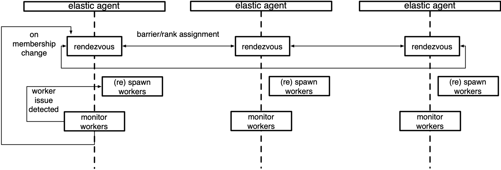

Elastic Agent#
Created On: May 04, 2021 | Last Updated On: Jun 07, 2025
Server#
The elastic agent is the control plane of torchelastic.
It is a process that launches and manages underlying worker processes. The agent is responsible for:
Working with distributed torch: the workers are started with all the necessary information to successfully and trivially call
torch.distributed.init_process_group().Fault tolerance: monitors workers and upon detecting worker failures or unhealthiness, tears down all workers and restarts everyone.
Elasticity: Reacts to membership changes and restarts workers with the new members.
The simplest agents are deployed per node and works with local processes. A more advanced agent can launch and manage workers remotely. Agents can be completely decentralized, making decisions based on the workers it manages. Or can be coordinated, communicating to other agents (that manage workers in the same job) to make a collective decision.
Below is a diagram of an agent that manages a local group of workers.

Concepts#
This section describes the high-level classes and concepts that
are relevant to understanding the role of the agent in torchelastic.
- class torch.distributed.elastic.agent.server.ElasticAgent[source]#
An agent process responsible for managing one or more worker processes.
The worker processes are assumed to be regular distributed PyTorch scripts. When the worker process is created by the agent, the agent provides the necessary information for the worker processes to properly initialize a torch process group.
The exact deployment topology and ratio of agent-to-worker is dependent on the specific implementation of the agent and the user’s job placement preferences. For instance, to run a distributed training job on GPU with 8 trainers (one per GPU) one can:
Use 8 x single GPU instances, place an agent per instance, managing 1 worker per agent.
Use 4 x double GPU instances, place an agent per instance, managing 2 workers per agent.
Use 2 x quad GPU instances, place an agent per instance, managing 4 workers per agent.
Use 1 x 8 GPU instance, place an agent per instance, managing 8 workers per agent.
Usage
group_result = agent.run() if group_result.is_failed(): # workers failed failure = group_result.failures[0] logger.exception("worker 0 failed with exit code : %s", failure.exit_code) else: return group_result.return_values[0] # return rank 0's results
- abstract get_worker_group(role='default')[source]#
Return the
WorkerGroupfor the givenrole.Note that the worker group is a mutable object and hence in a multi-threaded/process environment it may change state. Implementers are encouraged (but not required) to return a defensive read-only copy.
- Return type
- abstract run(role='default')[source]#
Run the agent.
Supports retrying the worker group on failures up to
max_restarts.- Returns
The result of the execution, containing the return values or failure details for each worker mapped by the worker’s global rank.
- Raises
Exception - any other failures NOT related to worker process –
- Return type
- class torch.distributed.elastic.agent.server.WorkerSpec(role, local_world_size, rdzv_handler, fn=None, entrypoint=None, args=(), max_restarts=3, monitor_interval=0.1, master_port=None, master_addr=None, local_addr=None, event_log_handler='null')[source]#
Blueprint information about a particular type of worker.
For a given role, there must only exist a single worker spec. Worker spec is expected to be homogeneous across all nodes (machine), that is each node runs the same number of workers for a particular spec.
- Parameters
role (str) – user-defined role for the workers with this spec
local_world_size (int) – number local workers to run
fn (Optional[Callable]) – (deprecated use entrypoint instead)
entrypoint (Optional[Union[Callable, str]]) – worker function or command
args (tuple) – arguments to pass to
entrypointrdzv_handler (RendezvousHandler) – handles rdzv for this set of workers
max_restarts (int) – number of max retries for the workers
monitor_interval (float) – monitor status of workers every
nsecondsmaster_port (Optional[int]) – fixed port to run the c10d store on rank 0 if not specified then will chose a random free port
master_addr (Optional[str]) – fixed master_addr to run the c10d store on rank 0 if not specified then will chose hostname on agent rank 0
redirects – redirect std streams to a file, selectively redirect for a particular local rank by passing a map
tee – tees the specified std stream(s) to console + file, selectively tee for a particular local rank by passing a map, takes precedence over
redirectssettings.event_log_handler (str) – name of the event logging handler as registered in elastic/events/handlers.py.
- class torch.distributed.elastic.agent.server.WorkerState(value)[source]#
A state of the
WorkerGroup.Workers in a worker group change state as a unit. If a single worker in a worker group fails the entire set is considered failed:
UNKNOWN - agent lost track of worker group state, unrecoverable INIT - worker group object created not yet started HEALTHY - workers running and healthy UNHEALTHY - workers running and unhealthy STOPPED - workers stopped (interrupted) by the agent SUCCEEDED - workers finished running (exit 0) FAILED - workers failed to successfully finish (exit !0)
A worker group starts from an initial
INITstate, then progresses toHEALTHYorUNHEALTHYstates, and finally reaches a terminalSUCCEEDEDorFAILEDstate.Worker groups can be interrupted and temporarily put into
STOPPEDstate by the agent. Workers inSTOPPEDstate are scheduled to be restarted in the near future by the agent. Some examples of workers being put intoSTOPPEDstate are:Worker group failure|unhealthy observed
Membership change detected
When actions (start, stop, rdzv, retry, etc) on worker group fails and results in the action being partially applied to the worker group the state will be
UNKNOWN. Typically this happens on uncaught/unhandled exceptions during state change events on the agent. The agent is not expected to recover worker groups inUNKNOWNstate and is better off self terminating and allowing the job manager to retry the node.
- class torch.distributed.elastic.agent.server.Worker(local_rank, global_rank=-1, role_rank=-1, world_size=-1, role_world_size=-1)[source]#
A worker instance.
Contrast this with
WorkerSpecthat represents the specifications of a worker. AWorkeris created from aWorkerSpec. AWorkeris to aWorkerSpecas an object is to a class.The
idof the worker is interpreted by the specific implementation ofElasticAgent. For a local agent, it could be thepid (int)of the worker, for a remote agent it could be encoded ashost:port (string).- Parameters
id (Any) – uniquely identifies a worker (interpreted by the agent)
local_rank (int) – local rank of the worker
global_rank (int) – global rank of the worker
role_rank (int) – rank of the worker across all workers that have the same role
world_size (int) – number of workers (globally)
role_world_size (int) – number of workers that have the same role
- class torch.distributed.elastic.agent.server.WorkerGroup(spec)[source]#
A set of
Workerinstances.The class defines a set of
Workerinstances for the givenWorkerSpecmanaged byElasticAgent. Whether the worker group contains cross instance workers or not depends on the implementation of the agent.
Implementations#
Below are the agent implementations provided by torchelastic.
- class torch.distributed.elastic.agent.server.local_elastic_agent.LocalElasticAgent(spec, logs_specs, start_method='spawn', exit_barrier_timeout=300, log_line_prefix_template=None)[source]#
An implementation of
torchelastic.agent.server.ElasticAgentthat handles host-local workers.This agent is deployed per host and is configured to spawn
nworkers. When using GPUs,nmaps to the number of GPUs available on the host.The local agent does not communicate to other local agents deployed on other hosts, even if the workers may communicate inter-host. The worker id is interpreted to be a local process. The agent starts and stops all worker processes as a single unit.
The worker function and argument passed to the worker function must be python multiprocessing compatible. To pass multiprocessing data structures to the workers you may create the data structure in the same multiprocessing context as the specified
start_methodand pass it as a function argument.The
exit_barrier_timeoutspecifies the amount of time (in seconds) to wait for other agents to finish. This acts as a safety net to handle cases where workers finish at different times, to prevent agents from viewing workers that finished early as a scale-down event. It is strongly advised that the user code deal with ensuring that workers are terminated in a synchronous manner rather than relying on the exit_barrier_timeout.A named pipe based watchdog can be enabled in
`LocalElasticAgent`if an environment variableTORCHELASTIC_ENABLE_FILE_TIMERwith value 1 has been defined in the`LocalElasticAgent`process. Optionally, another environment variable`TORCHELASTIC_TIMER_FILE`can be set with a unique file name for the named pipe. If the environment variable`TORCHELASTIC_TIMER_FILE`is not set,`LocalElasticAgent`will internally create a unique file name and set it to the environment variable`TORCHELASTIC_TIMER_FILE`, and this environment variable will be propagated to the worker processes to allow them to connect to the same named pipe that`LocalElasticAgent`uses.Logs are written to the specified log directory. Each log line will be by default prefixed by
[${role_name}${local_rank}]:(e.g.[trainer0]: foobar). Log prefixes can be customized by passing a template string as thelog_line_prefix_templateargument. The following macros (identifiers) are substituted at runtime:${role_name}, ${local_rank}, ${rank}. For example, to prefix each log line with global rank instead of the local rank, setlog_line_prefix_template = "[${rank}]:.Example launching function
def trainer(args) -> str: return "do train" def main(): start_method="spawn" shared_queue= multiprocessing.get_context(start_method).Queue() spec = WorkerSpec( role="trainer", local_world_size=nproc_per_process, entrypoint=trainer, args=("foobar",), ...<OTHER_PARAMS...>) agent = LocalElasticAgent(spec, start_method) results = agent.run() if results.is_failed(): print("trainer failed") else: print(f"rank 0 return value: {results.return_values[0]}") # prints -> rank 0 return value: do train
Example launching binary
def main(): spec = WorkerSpec( role="trainer", local_world_size=nproc_per_process, entrypoint="/usr/local/bin/trainer", args=("--trainer-args", "foobar"), ...<OTHER_PARAMS...>) agent = LocalElasticAgent(spec) results = agent.run() if not results.is_failed(): print("binary launches do not have return values")
Extending the Agent#
To extend the agent you can implement ElasticAgent directly, however
we recommend you extend SimpleElasticAgent instead, which provides
most of the scaffolding and leaves you with a few specific abstract methods
to implement.
- class torch.distributed.elastic.agent.server.SimpleElasticAgent(spec, exit_barrier_timeout=300)[source]#
An
ElasticAgentthat manages one particular type of worker role.An
ElasticAgentthat manages workers (WorkerGroup) for a singleWorkerSpecsuch as one particular type of worker role.- _assign_worker_ranks(store, group_rank, group_world_size, spec)[source]#
Determine proper ranks for worker processes.
Fast Path: when all workers have the same role and world size. We calculate the global rank to be group_rank * group_world_size + local_rank. And the role_world_size is the same as global_world_size. No TCP store is used in this case. This is only enabled when users set the environment variable TORCH_ELASTIC_WORKER_IDENTICAL to 1.
Time complexity: each worker O(1), overall O(1)
Slow Path: when workers have different roles and world sizes. We use the the following algorithm:
Each agent writes its configuration(group_rank, group_world_size , num_workers) to the common store.
The rank 0 agent reads all the role_info from the store and determines each agents worker ranks.
Determine the global rank: the global rank of the workers is computed by cumulative sum of the local_world_size for all workers in front of it. For efficiency reasons each worker is assigned a base global rank such that it’s workers are in the range [base_global_rank, base_global_rank + local_world_size).
Determine the role rank: The role rank is determined using the algorithms in the point 3 with the exception that the ranks are calculated with respect to the role name.
The rank 0 agent writes the assigned ranks to the store.
Each agent reads the assigned ranks from the store.
Time complexity: each worker O(1), rank0 O(n), overall O(n)
- Return type
- _exit_barrier()[source]#
Define a barrier that keeps the agent process alive until all workers finish.
Wait for
exit_barrier_timeoutseconds for all agents to finish executing their local workers (either successfully or not). This acts as a safety guard against user scripts that terminate at different times.
- _initialize_workers(worker_group)[source]#
Start a fresh set of workers for the worker_group.
Essentially, a rendezvous followed by a
start_workers. The caller should first call_stop_workers()to stop running workers prior to calling this method.Optimistically sets the state of the worker group that just started as
HEALTHYand delegates the actual monitoring of state to_monitor_workers()method
- abstract _monitor_workers(worker_group)[source]#
Check on the workers for the
worker_group.This function also returns the new state of the worker group.
- Return type
- _rendezvous(worker_group)[source]#
Run rendezvous for the workers specified by the worker spec.
Assigns workers a new global rank and world size. Updates the rendezvous store for the worker group.
- _restart_workers(worker_group)[source]#
Restart (stops, rendezvous, starts) all local workers in the group.
- abstract _shutdown(death_sig=Signals.SIGTERM)[source]#
Clean up any resources that were allocated during the agent’s work.
- Parameters
death_sig (Signals) – Signal to send to the child process, SIGTERM is default
- class torch.distributed.elastic.agent.server.api.RunResult(state, return_values=<factory>, failures=<factory>)[source]#
Return results of the worker executions.
Run results follow an “all-or-nothing” policy where the run is successful if and only if ALL local workers managed by this agent complete successfully.
If the result is successful (e.g.
is_failed() = False) then thereturn_valuesfield contains the outputs (return values) of the workers managed by THIS agent mapped by their GLOBAL ranks. That isresult.return_values[0]is the return value of global rank 0.Note
return_valuesare only meaningful for when the worker entrypoint is a function. Workers specified as a binary entrypoint do not canonically have a return value and thereturn_valuesfield is meaningless and may be empty.If
is_failed()returnsTruethen thefailuresfield contains the failure information, again, mapped by the GLOBAL rank of the worker that failed.The keys in
return_valuesandfailuresare mutually exclusive, that is, a worker’s final state can only be one of: succeeded, failed. Workers intentionally terminated by the agent according to the agent’s restart policy, are not represented in eitherreturn_valuesnorfailures.
Watchdog in the Agent#
A named pipe based watchdog can be enabled in LocalElasticAgent if an
environment variable TORCHELASTIC_ENABLE_FILE_TIMER with value 1 has
been defined in the LocalElasticAgent process.
Optionally, another environment variable TORCHELASTIC_TIMER_FILE
can be set with a unique file name for the named pipe. If the environment
variable TORCHELASTIC_TIMER_FILE is not set, LocalElasticAgent
will internally create a unique file name and set it to the environment
variable TORCHELASTIC_TIMER_FILE, and this environment variable will
be propagated to the worker processes to allow them to connect to the same
named pipe that LocalElasticAgent uses.
Health Check Server#
A health check monitoring server can be enabled in LocalElasticAgent
if an environment variable TORCHELASTIC_HEALTH_CHECK_PORT has been defined
in the LocalElasticAgent process.
Adding interface for health check server which can be extended by starting tcp/http
server on the specified port number.
Additionally, health check server will have callback to check watchdog is alive.
- class torch.distributed.elastic.agent.server.health_check_server.HealthCheckServer(alive_callback, port, timeout)[source]#
Interface for health check monitoring server, which can be extended by starting tcp/http server on the specified port.
- Parameters